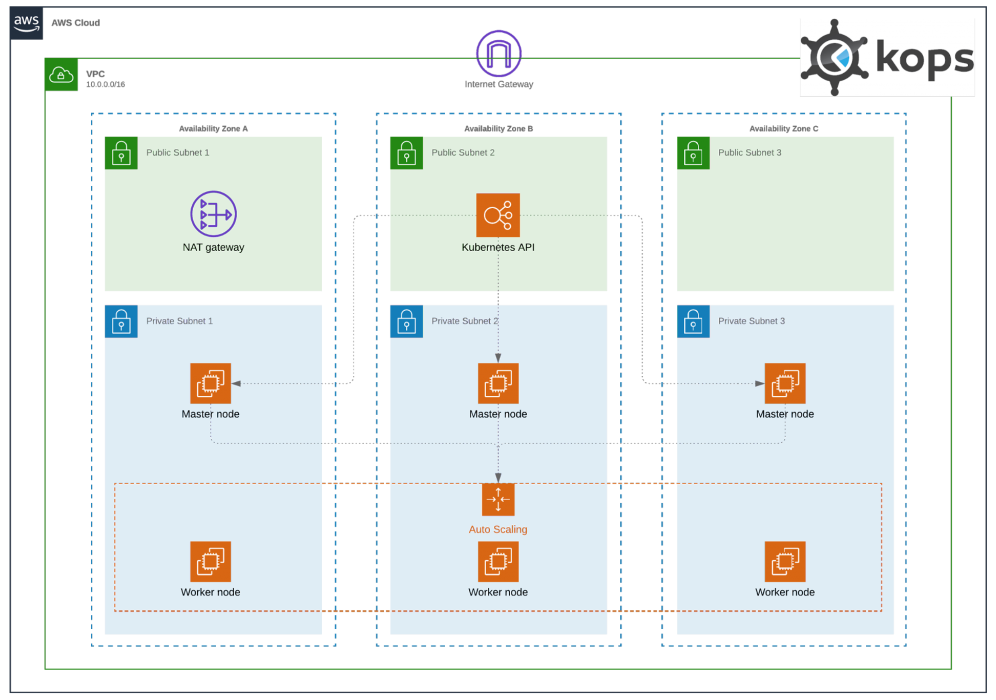
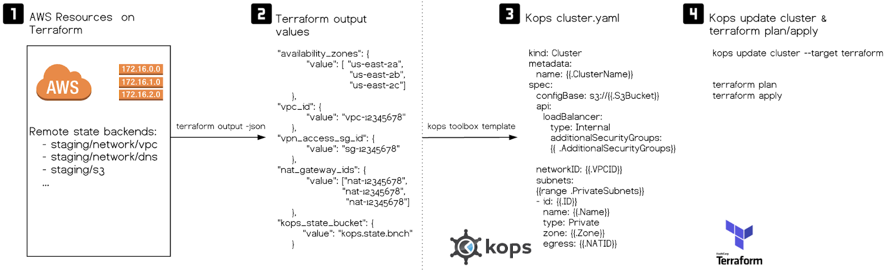

AWS Kubernetes Kops Cluster ¶
Kops Pre-requisites ¶
Important consideration
K8s clusters provisioned by Kops have a number of resources that need to be available before the
cluster is created. These are Kops pre-requisites and they are defined in the 1-prerequisites
directory which includes all Terraform files used to create/modify these resources.
 The current code has been fully tested with the AWS VPC Network Module
The current code has been fully tested with the AWS VPC Network Module
OS pre-req packages
Ref Link: https://github.com/kubernetes/kops/blob/master/docs/install.md)
- kops >= 1.14.0
╰─○ kops version Version 1.15.0 (git-9992b4055) - kubectl >= 1.14.0
╰─○ kubectl version --client + kubectl version --client Client Version: version.Info{Major:"1", Minor:"14", GitVersion:"v1.14.0", GitCommit:"641856db18352033a0d96dbc99153fa3b27298e5", GitTreeState:"clean", BuildDate:"2019-03-25T15:53:57Z", GoVersion:"go1.12.1", Compiler:"gc", Platform:"linux/amd64"} - terraform >= 0.12.0
╰─○ terraform version Terraform v0.12.24 - NOTE1: Regarding Terraform versions please also consider https://github.com/binbashar/bb-devops-tf-aws-kops#todo
-
NOTE2: These dependencies will me mostly covered via
Makefilew/ terraform dockerized cmds (https://hub.docker.com/repository/docker/binbash/terraform-awscli) -
jq >= 1.5.0
╰─○ jq --version jq-1.5-1-a5b5cbe
Resulting Solutions Architecture ¶

Why this workflow ¶
The workflow follows the same approach that is used to manage other terraform resources in your AWS accounts. E.g. network, identities, and so on.
So we'll use existing AWS resources to create a cluster-template.yaml containing all the resource
IDs that Kops needs to create a Kubernetes cluster.
Why not directly use Kops CLI to create the K8s cluster as well as the VPC and its other dependencies?
-
While this is a valid approach, we want to manage all these building blocks independently and be able to fully customize any AWS component without having to alter our Kubernetes cluster definitions and vice-versa.
-
This is a fully declarative coding style approach to manage your infrastructure so being able to declare the state of our cluster in YAML files fits 100% as code & GitOps based approach.

Kops Cluster Management ¶
The 2-kops directory includes helper scripts and Terraform files in order to template our Kubernetes
cluster definition. The idea is to use our Terraform outputs from 1-prerequisites to construct a cluster definition.
Overview ¶
Cluster Management via Kops is typically carried out through the kops CLI. In this case, we use a 2-kops directory that contains a Makefile, Terraform files and other helper scripts that reinforce the workflow we use to create/update/delete the cluster.
Workflow ¶
This workflow is a little different to the typical Terraform workflows we use. The full workflow goes as follows:
Cluster: Creation & Update
- Modify files under
1-prerequisites - Main files to update probably are
locals.tfandoutputs.tf - Mostly before the cluster is created but could be needed afterward
- Modify
cluster-template.ymlunder2-kopsfolder - E.g. to add or remove instance groups, upgrade k8s version, etc
- At
2-kops/context runmake cluster-updatewill follow the steps below - Get Terraform outputs from
1-prerequisites - Generate a Kops cluster manifest -- it uses
cluster-template.ymlas a template and the outputs from the point above as replacement values - Update Kops state -- it uses the generated Kops cluster manifest in previous point (
cluster.yml) - Generate Kops Terraform file (
kubernetes.tf) -- this file represents the changes that Kops needs to apply on the cloud provider. - Run
make plan - To preview any infrastructure changes that Terraform will make.
- If desired we could submit a PR, allowing you and the rest of the team to understand and review what changes would
be made to the Kubernetes cluster before excecuting
make apply(terraform apply). This brings the huge benefit of treating changes to our Kubernetes clusters with a GitOps oriented approach, basically like we treat any other code & infrastructure change, and integrate it with the rest of our tools and practices like CI/CD, integration testing, replicate environments and so on. - Run
make apply - To apply those infrastructure changes on AWS.
- Run
make cluster-rolling-update - To determine if Kops needs to trigger some changes to happen right now (dry run)
- These are usually changes to the EC2 instances that won't get reflected as they depend on the autoscaling
- Run
make cluster-rolling-update-yes - To actually make any changes to the cluster masters/nodes happen
Cluster: Deletion
To clean-up any resources created for your K8s cluster, you should run:
- At
2-kopsfolder context runmake destroy - This will excecute a
terraform destroyof all thekubernets.tfdeclared AWS resources. - At
2-kopsfolder context runcluster-destroy - Will run Kops
destroy cluster-- only dry run, no changes will be applied - Exec
cluster-destroy-yes- Kops will effectively destroy all the remaining cluster resources.
- Finally if at
1-prerequisitesexecmake destroy- This will remove Kops state S3 bucket + any other extra resources you've provsioned for your cluster.
Tipical Workflow ¶
The workflow may look complicated at first but generally it boils down to these simplified steps:
1. Modify cluster-template.yml
2. Run make cluste-update
3. Run make apply
4. Run make cluster-rolling-update-yes
What about persistent and stateful K8s resources?
This approach will work better the more stateless your Kubernetes workloads are. Treating Kubernetes clusters as ephemeral and replaceable infrastructure requires to consider not to use persistent volumes or the drawback of difficulties when running workloads such as databases on K8s. We feel pretty confident that we can recreate our workloads by applying each of our service definitions, charts and manifests to a given Kubernetes cluster as long as we keep the persistent storage separately on AWS RDS, DynamoDB, EFS and so on. In terms of the etcd state persistency, Kops already provisions the etcd volumes (AWS EBS) independently to the master instances they get attached to. This helps to persist the etcd state after rolling update your master nodes without any user intervention. Moreover simplifying volume backups via EBS Snapshots (consider https://github.com/binbashar/terraform-aws-backup-by-tags). We also use a very valuable backup tool named Velero (formerly Heptio Ark - https://github.com/vmware-tanzu/velero) to o back up and restore our Kubernetes cluster resources and persistent volumes.
TODO
- IMPORTANT: Kops terraform output (
kops update cluster --target terraform) is still generated for Terraform0.11.x(https://github.com/kubernetes/kops/issues/7052) we'll take care of the migration whentf-0.12gets fully supported. - Create a Binbash Leverage public Confluence Wiki entry detailing some more info about etcd, calico and k8s versions compatibilities